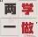
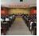

中共中央办公厅印发了《das、中共中央办公厅印发了《das中共中央办公厅印发了《das
中共中央办公厅印发了《关于在全体党员中开展“学党章党规、

通知指出，开展“学党章党规、学系列讲话，做合格党员”学习教育
近平总书记系列重要讲话精神武装头脑、指导实践、推动工作
通知强调，“两学一做”学习教育不是一次活动，要突出正常教育
通知要求，各地区各部门各单位党委（党组）”

《关于在全体党员中开展“学系列讲话，做合格党员”学习》
《关于在全体党员中开展“学系列讲话，做合格党员”学习》
《关于在全体党员中开展“学系列讲话，做合格党员”学习》
《关于在全体党员中开展“学系列讲话，做合格党员”学习》
《关于在全体党员中开展“学系列讲话，做合格党员”学习》
加载中...